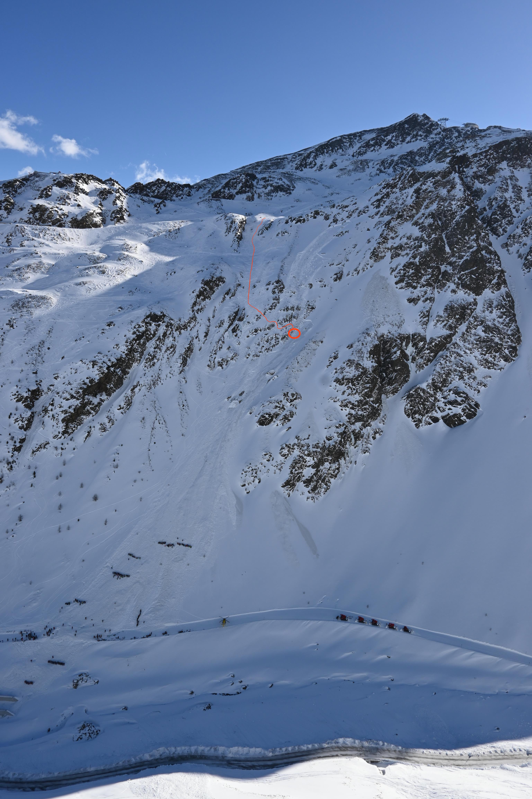

A photo taken by the Sölden police of the avalanche whilst the search was still taking place.
Avalanche in Sölden, February 4th 2022
On the 4th of February I was in an avalanche accident in Sölden, Austria. As a way to process the event I've tried to collect as much information as I can and write it down. It's not much and we're still waiting for an official report on the accident. My hope is to share this with people I know, and part of it is also that it hopefully will make avalanche risks more palpable and real to whoever reads it. Obviously the texts here are heavily subjective and based on my experience. I might not remember things correctly and I might have experienced things differently than what happened due to stress, adrenaline, trauma etc.
The Situation
To start with here is the avalanche report for the 4th of February from the website avalanche.report.
We were five skiers that day, but luckily my wife was not feeling well and had decided to go early to a restaurant to rest. So in our group we were four skiers; me, skier 2, skier 3, and skier 4, and three of us were buried by the avalanche. On top of our group there was another group of 3 where 2 were buried. All 5 of us that were buried were rescued alive and sent to hospitals. The one that skied first in our group was filming the second person so we got it on video, so let's start with that.
In the first frames of the video you can barely see me and skier 2 being hit by the avalanche. And skier 3 who was filming was also buried shortly after the film. Skier 4 who you can see skiing was not hit and was the one who started the search.
The location of the avalanche was between two pistes, and as you can see the avalanche did end up going through the lower piste.
The Police Statement
As part of all avalanche accidents the police requires makes an investigation and needs a statement from those that were involved in the accident. I made mine pretty soon after the accident. I've included it below without altering it in case my memory of the accident would change over time. At the top you can see the avalanche picture annotated with our route down the face, and where me and skier 2 were standing when we were hit from above by the avalanche. Under the photo you will find the police statement.
The run we skied was not the one we had intended to ski as a group, we ended up there due to poor decision making and because we got lost. Our intention before hand was to ski much more skiers right out on the plateu where we had looked at a map and determined (probably incorrectly) that we could stay mostly below 30 degrees and avoid avalanche terrain as much as possible during the run. We skied 1 at a time and tried to stop at "safe" spots on our way down. Truls was skiing first and leading the way, Caroline and Tove were skiing 2nd or 3rd and I was designated last person. We had a high pace and Truls usually started skiing again before I caught up with the group.
When I caught up with the group down by the rocks we realized that we were not in a good place and said that we need to get out of here. Truls started finding his way down between the rocks. At this time we noticed a second group coming up behind us with 3 people in it. At least one snowboarder, and one skier but I don't remember the third. I remember cursing about them with Caroline because they were not wearing any avalanche equipment as far as we could tell, and we were stressed about where we were.
We took off our skis and started climbing down the rocks. At least one in the group behind us decided to follow us (10-15 meters behind us). Truls got down from the rocks first and helped Tove and Caroline down. Tove proceeded to put on her skis and skied down immediately. Caroline started skiing as soon as Tove had gone down a bit. I also climbed down and was standing right next to Truls (in the circle on the picture). Truls started putting his skis on when we heard a low rumbling from above. I heard Truls scream "shit!", I looked up and saw a wall of snow.
I reached for my avalanche airbag handle and pulled. Then everything went dark and I could feel myself sliding down very fast. I was going on my back with my head first, floating on my airbag close to the surface of the avalanche. I remember reaching an arm up high and feeling that my hand was in the air. I wanted something to stick out of the snow when we stopped. At one time while sliding down I remember feeling weightless and hitting the ground again quite hard. Here the backpack took most of the force. When the avalanche slowed down I could feel the snow become hard as concrete. I tried to get my hands and arms moving but I couldn't move them more than a few millimeters. I was very scared and panicking, but I remember being relieved that I didn't have any snow in my mouth. Last thing I remember is trying to slow down my breathing because I wanted to limit the amount of co2 in front of my face. The next thing I remember was waking up with my face free of the snow in the hands of the rescuers.
The Rescue
In total we were 5 who were hit and buried, with 3 from our group. Everyone except one in our group had done several avalanche trainings, but none in our group had practiced multi-person search. The skier in our group that wasn't hit (who you can see skiing in the video) stopped in the piste and turned around once she had stopped and just saw a wall of snow. THe avalanche debris was about 2-3 meters high in the piste. She took out her beacon and started searching. There were many people in the piste around her very confused. Once she got a reading on the first find (which we think was me) she took out her shovel and put it in the snow and screamed at people to start digging, then she ran away from the first signal 15 meters or so until she found what she thought was a new signal. She repeated this once more until she think she had found three signals. At this point professional rescue services had arrived and took over.
One thing she remembers about the search was was partly how few people were helping and mostly stood and took pictures. And also that noone in the piste of course had any rescue equipment. At one point there started showing up people with beacons, shoves, probes etc and started helping. She remembers having had to yell at some people to turn their beacons off when she noticed that she lost her signal. One person with their beacon on yelled back "I don't know how to turn it off" and started approaching her with his beacon so she could help him turn it off. She had to tell the man to run in the other direction or just throw his beacon as far as possible in another direction.
At the same time as she was searching some people from the piste saw the person who was filming in our groups hand sticking up from the snow. She was buried in the avalanche debris beneath the piste. They started digging with a snowboard and got her up.
I woke up when they freed my face from the snow, likely when they punctured my airbag to give me room to breath. I was completely blue in my face. It is hard to get details but I was probably buried somewhere between 15-25 minutes. They found me in the piste at the bottom of the picture. I was overwhelmed with relief and joy at seeing people and the sky again. My body was still buried and it took them quite some time to free the rest of me. It's hard to say how deep I was but I took a picture of the pit once they got me out and it looks to be around 2m deep.

I was calm when they were digging me out, but very cold and very winded and exhausted from being without air for so long. The people who got me out in the end were police and professional rescue services. One thing I remember when they were freing my body was that they put a jacket over my face to avoid more snow falling on me, which was something I really appreciated because all I wanted was to get away from the snow. They brought me out and put me to the side, covered me with a reflective blanket and I was looked at by a doctor. I was talking somewhat normally but winded by then and was able to tell them that I was fine. While I sat there I took the picture and was able to call my wife. According to the video the avalanche happened at 11.28, and I called my wife at 12.15, which feels unreal because I tried to call her as soon as I could so I have no idea where the time went.
From what we can read in the news in the end there were about 80 professional mountain rescue personell and a total of 150 people partaking in searching through the avalanche debris with probes. There were also 4 helictopters and a bunch of snowmobiles and ambulances.
I haven't heard anything about the other group regarding what happened after. Regarding myself I walked away from the avalanche to an ambulance that drove me to the hospital where I stayed for 2 nights for observation. I had a minor concussion and a torn ACL in my knee. The girl filming was flown in a helicopter with a low body temperature to the same hospital. She suffered a concussion and minor injury to her knee and was able to leave the next day.
The third skier in our group was buried for the longest and was for some time without air. He was breathing when they got him out but not conscious. He also had a red mark on his neck from his backpacks sternum strap that had been pushing against his throat. He was taken to a trauma hospital where he was kept asleep for 3 days. Today he is physically fine in the sense that he can do sports and talk normally, but with some brain swelling still. He has suffered problems with his memory and is currently being treated at a rehab center. As of the 24th of February he is still making progress every day.
Reflection and Speculation
I don't want to put too much here and looking at the video I don't think there's need to state how lucky we were. However I've speculated a bit contributing factors to our very lucky outcome. Other than the obvious beacon, shovel and probe.
Avalanche Airbag
I'm convinced it would not have gone so well if we didn't have avalanche airbags. Not only that it kept us on the surface when the avalanche was moving, but also because it protected me from trauma on the way down. As I wrote in the police report I did experience a fall during the the avalanche and the backpack took most of the force. One thing I've been thinking about is that my avy bag was new for this season. And before this I had an electronic airbag that is programmed to deflate after 60 seconds. This would have created an air pocket. In this type of avalanche where the snow compressed to ice I think that could have helped a lot. Not only creating a space for co2 to disapppear, but also to create room for the chest to move and breath. Another thing is to wear your backpack tight and to use the crotch strap! My backpack was still snuggly on my back but as I wrote above it was tangled around the neck of my friend. He usually wears his crotch strap but we do not know if he did that day. And he can just have been unlucky.
Proper Clothing
Good shell and other good clothing. I was wearing only my base layer in merino wool, as well as a gore-tex pro shell layer. Before this season I was always skiing with rather tight "touring"-compatible clothing where I often got snow inside when I fell. This year I decided to invest in more of a freeride shell with gore-tex pro and a bib for the pants. I think this was a contributing factor to why I was almost dry and had a body temperature of 35-36 when arriving to the clinic. My friend who did not wear gore-tex (and not sure about the clothing beneath) and was buried for shorter had to be treated for light hypothermia.
Post-Rescue Training
After having been in this myself and experienced how absolutely shitty I felt after being brought out, I have new found appreciation for how well they treated me after. From how important it is to get the person warm, to how little you can expect from the victim to help with anything even though they are fine physically (like me). I have no idea how we would have managed if the accident didn't happen in such an easily accessible place. Learning what to do once disaster has struck is as life saving as finding and digging someone out.